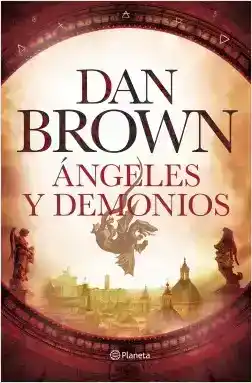

Ángeles y demonios
Sipnosis
El mayor enemigo de la Iglesia amenaza con destruirla desde sus cimientos.
Robert Langdon, experto en simbología, es convocado a un centro de investigación suizo para analizar un misterioso signo marcado a fuego en el pecho de un físico asesinado. Allí, Langdon descubre el resurgimiento de una antigua hermandad secreta: los illuminati, que han emergido de las sombras para llevar a cabo la fase final de una legendaria venganza contra su enemigo más odiado: la Iglesia católica.
Los peores temores de Langdon se confirman cuando los illuminati anuncian que han escondido una bomba en el corazón de la Ciudad del Vaticano. Con la cuenta atrás en marcha, Langdon viaja a Roma para unir fuerzas con Vittoria Vetra, una bella y misteriosa científica. Los dos se embarcarán en una desesperada carrera contrarreloj por los rincones menos conocidos del Vaticano.
Ángeles y demonios, la primera aventura del carismático e inolvidable Robert Langdon, es un adictivo y trepidante thriller sobre la eterna pugna entre ciencia y religión. Esta lucha se convierte en una verdadera guerra que pondrá en jaque a toda la humanidad, que deberá luchar hasta el último minuto para evitar un gran desastre.
Autor: Dan Brown
Si quiere saber más pincha aquí.
El código Da Vinci

Sipnosis
La mayor conspiración de los últimos 2000 años está a punto de ser desvelada.
Robert Langdon recibe una llamada en mitad de la noche: el conservador del museo del Louvre ha sido asesinado en extrañas circunstancias y junto a su cadáver ha aparecido un desconcertante mensaje cifrado. Al profundizar en la investigación, Langdon, experto en simbología, descubre que las pistas conducen a las obras de Leonardo Da Vinci… y que están a la vista de todos, ocultas por el ingenio del pintor.
Langdon une esfuerzos con la criptóloga francesa Sophie Neveu y descubre que el conservador del museo pertenecía al priorato de Sión, una sociedad que a lo largo de los siglos ha contado con miembros tan destacados como sir Isaac Newton, Botticelli, Victor Hugo o el propio Da Vinci, y que ha velado por mantener en secreto una sorprendente verdad histórica.
Una mezcla trepidante de aventuras, intrigas vaticanas, simbología y enigmas cifrados que provocó una extraordinaria polémica al poner en duda algunos de los dogmas sobre los que se asienta la Iglesia católica. Una de las novelas más leídas de todos los tiempos.
Autor: Dan Brown
Si quiere saber más pincha aquí.
El símbolo perdido

Sipnosis
¿Existe un secreto tan poderoso que, de salir a la luz, sea capaz de cambiar el mundo?
Washington. El experto en simbología Robert Langdon es convocado inesperadamente por Peter Solomon, masón, filántropo y su antiguo mentor, para dar una conferencia en el Capitolio. Pero el secuestro de Peter y el hallazgo de una mano tatuada con cinco enigmáticos símbolos cambian drásticamente el curso de los acontecimientos. Atrapado entre las exigencias de una mente perturbada y la investigación oficial, Langdon se ve inmerso en un mundo clandestino de secretos masónicos, historia oculta y escenarios nunca antes vistos, que parecen arrastrarlo hacia una sencilla pero inconcebible verdad.
Con la ayuda de Katherine Solomon, hermana de Peter y experta en ciencias neoéticas, Robert Langdon tiene doce horas para salvar a su amigo y, al mismo tiempo, evitar que uno de los secretos mejor guardados de nuestra historia caiga en manos equivocadas...
Dan Brown vuelve a retar a los lectores con una historia inteligente y de ritmo vertiginoso que ofrece sorpresas en cada página. El símbolo perdido es lo que los fans del autor estaban esperando: su novela más emocionante.
Autor: Dan Brown
Si quiere saber más pincha aquí.